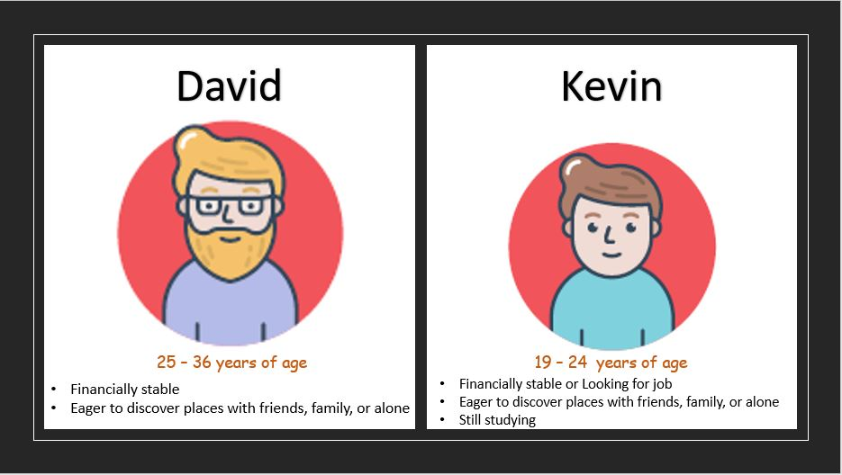
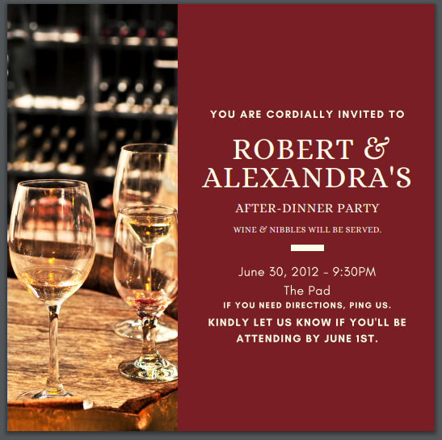

Activities
#1 - Self Introduction

I'm Kevin Josef Banglagan. You can call me Kevin. I'm 18 years old from Pasay City. I graduated from St. Mary's Academy - Pasay City (GS/JHS/SHS). Imagine being in one school for 12 years and received a loyalty award. I’m the youngest child among my siblings and we are 3. My sister is a nurse working on dubai and my brother is a chemical engineer and me now still studying to pursue my chosen course and graduate as an I.T student. I like playing music and play basketball. I'm more as a computer tech guy rather than playing console. I spend a lot of time on computer or playing computer games with friends. I like building, cleaning computer and help friends who are in need creating their own computer setup. My first game that I was addicted to was League of Legends (PC game). When I was at highschool, my classmates are always going to computer shop after dismissal and play computer games. I got jealous to them because their having fun while me just browsing the internet back in the days to watch Youtube. They convince me to play the game with them, after a while trying the game, I got addicted easily and wanted to play the game everyday. I wanted to travel to Korea, Japan, US to experience what's like being there because I've been to Canada when I was young. I followed tech guys on social media platforms like (Linus Tech Tips, Bitwit, JayzTwoCents, GamerNexus, etc..). I wanted to be like them to help and also people trying to learn new things about technologies. I tend to eat a lot of food when I'm alone while using computer. Most of the time I watch tv series, vlogs, gameplays so I can sleep because I don’t know why. I got the inspiration on computers when I was grade 5. My first computer was when I'm 11 years old with my brother-in-law. He helps me creating my first computer setup and he was an I.T too, that also makes me get inspired and chose I.T as my course.
#2 - Favorite Application

My favorite app/s that I used is Discord. Why Discord? It’s like skype but you only use headsets with microphone, earphones or in loudspeaker on phone to use voice chat or you can just use chat to communicate with your friends or discord user. I like it because it’s All-in-One voice and text chat for gamers. Features of this app is it’s free, you can download it on desktop or mobile. Secure, because it needs your email to login to the app. You can add music bot on the channel to listen music while playing games with your gamers.
#3 - 1000th Floor Elevator

I would design an interface on elevators that have a television that shows every floor of the building. It has mini A.C. There will be 3 elevators. You will put the floor number, then you’re going there at a speed of 35 mph to your elevator’s location. It takes 5 minutes from basement to 350th floor. Another 5 minutes from 351th to 750th and another 5 minutes for 751th to 1000th. It has a capacity of 35 people with priority seating for people with disabilities, elderly, pregnant women. It has music so the passengers will not be bored. The elevator doors are double so you can exit both ways. I got the inspiration from the hospital, Makati Medical Center wherein there elevators have both doors so that people can get off with ease.
#4 - Need Finding

Problem:
In the current status quo of our society, people have the capability to think of travelling on places they haven`t visited yet. They are enticed with the beautiful views of nature along with its different activities and events to begin with. People are always looking forward on creating unforgettable moments, experiences and memories with or without their love ones. Searching different places for possible vacation would be easy due to today`s technology but, the problem begins when there are varieties of information on the internet and people are confused because when these are compared on each other it produces unmatched result.
Needs:
• A travel guide that contains information about different tourist’s spot, restaurant, do’s and don’ts, etiquettes, and basic language of a certain country.
• Gathered precise information as a guidance on travelling to different places.
#5 - Initial Prototype

This is our prototype for our mobile application.
#6 - Persona
This is our persona of my group for our group.
#7 - Information Design
1. How can we improve this?
It can be improved by separating the related information, and emphasize the important details. Also, having designs would be great to be pleasing to the eyes.
2. What would be the objective function?
The objective function would be is to make organized and not confusing for the one who will receive. Also, the design should be pleasing and make it formal to the audience.
#8a - Grid Layout Design

This is a design for my 3x3 grid design.
#8b - Grid Layout Design

This is a design for my 4x4 grid design.
#8c - Grid Layout Design

This is a design for my 3x3 grid design with example pictures and text.
#8d - Grid Layout Design

This is a design for my 4x4 grid design with example pictures and text.
#9 - 12-Column Grid Design

This is my design for my 12-column grid.